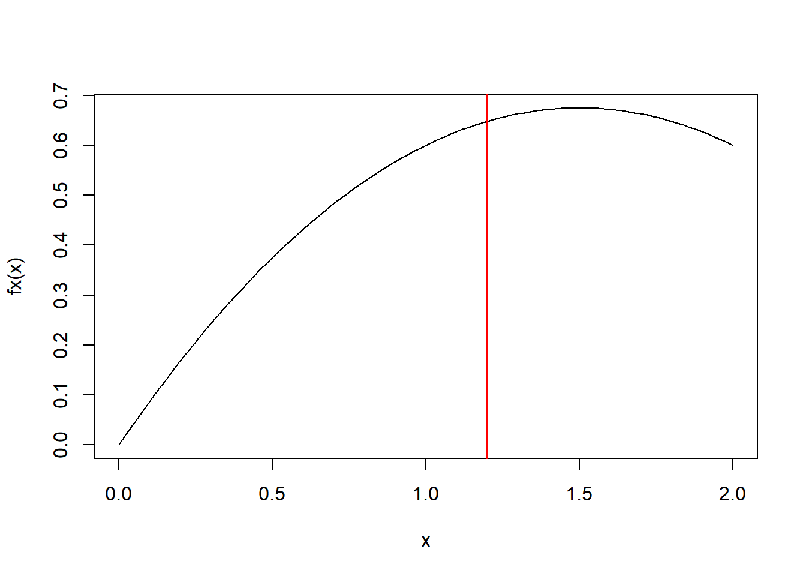

3 Tema 3: Variables aleatorias
El objetivo de este tema es aproximarnos a modelos probabilísticos con sus respectivos parámetros, esto nos ayudara a adaptar diversos problemas reales.
3.1 Introducción a variable aleatoria
Definión: Sea \(E\) un experimento y \(\Omega\) el espacio muestral asociado a este experimento. Una función \(X: \Omega \rightarrow IR\), de tal forma que a cada elemento \(w \in \Omega\) le asocia un número real \(x=X(w)\) se denomina variable aleatoria.
Nota 1: En el fondo estamos implicando que ahora vamos a trabajar exclusivamente con números en la recta real, donde estos números tienen asociado una probabilidad de ocurrencia.
Nota 2: Debemos distinguir dos aspectos respecto trabajar sobre la recta real, (1) se pueden definir valores discretos (2) se pueden definir valores continuos.
\(X\) es la variable aleatoria (va), el dominio de \(X\) es todo \(\Omega\), y el rango es un sub conjunto de la recta real, el rango lo vamo a denotar como \(Rx\). \(Rx \in IR\)
Ejemplo 1: Establecer la variable aleatoria detrás del experimento de lanzar dos dados y obtener la suma de las caras.
Solución, \(\#\Omega=36\)
\[\Omega=\{(1,1),(1,2),(1,3),(1,4),\ldots,(6,6)\}\]
\[X: \{X(1,1)=2,X(1,2)=3,\ldots,X(6,6)=12\}\]
El recorrido de \(X\), \(Rx=\{2, 3, \ldots,12 \}\)
Ejemplo 2: Sea el experimento lanzar 3 monedas y observar el resultado y definir la variable aleatoria como la cantidad de caras que salen en los lanzamientos.
Solución, sean los eventos \(C=cara\), \(S=Sello\)
\[\Omega=\{(CCC),(CCS),(CSC),(SCC),(CSS),(SCS),(SSC),(SSS) \}\] \[X: \{X(CCC)=3,X(CCS)=2,X(CSC)=2,\ldots,X(SSS)=0 \}\]
A partir de esto, \(Rx=\{0,1,2,3\}\)
3.2 Función de probabilidad (densidad)
Definión: Sea \(X: \Omega \rightarrow IR\), una va que toma los valores \(x_1,x_2, \ldots\),. Se dice que \(P(x_i)\) es una función de probabilidad o distribución de probabilidad de la variable aleatoria \(X\). Si a cada valor de \(x_i\) se le asigna una probabilidad de ocurrencia.
\[P(x_i)=P(X=x_i)=P(w\in \Omega/X(w)=x_i)\]
Ejemplo 1: Para el ejemplo de las monedas, podemos calcular lo siguiente:
\[\begin{array} & & P(X=0)=\frac{1}{8}\\ & P(X=1)=\frac{3}{8}\\ & P(X=2)=\frac{3}{8}\\ & P(X=3)=\frac{1}{8}\\ \end{array} \]
| X | 0 | 1 | 2 | 3 |
|---|---|---|---|---|
| \(P(X=x)\) | 1/8 | 3/8 | 3/8 | 1/8 |
Tomar en cuenta que:
\[\sum_{Rx}P(X=x_i)=1\]
Ejercicio: Construir la distribución de probabilidad para el ejemplo del lanzamiento de los 2 dados.
| X | 2 | 3 | 4 | 5 | 6 | 7 | 8 | 9 | 10 | 11 | 12 | |
|---|---|---|---|---|---|---|---|---|---|---|---|---|
| \(P(X=x)\) | 1/36 | 2/36 | 3/36 | 4/36 | 5/36 | 6/36 | 5/36 | 4/36 | 3/36 | 2/36 | 1/36 | 1 |
A partir de la tabla calcular las siguientes probabilidad:
- \(P(X\leq 6)=P(X=2)+P(X=3)+P(X=4)+P(X=5)+P(X=6)=15/36\)
- \(P(X\leq 7)=21/36\)
- \(P(X\geq 7)=1-P(X<7)=1-P(X\leq 6)=1-\frac{15}{36}=21/36\)
- \(P(X\leq 2)=P(X=2)=1/36\)
- \(P(X > 2)=1-P(X \leq 2)=1-\frac{1}{36}=\frac{35}{36}\)
3.3 Función de distribución (acumulada)
Nota: Es muy similar a lo que se vio en la parte de estadística descriptiva cuando se calculo las frecuencias relativas/absolutas acumuladas.
Definición: La función de distribución acumulada de una va \(X\), denotada por \(F(X)\), es una función: \(F: IR \rightarrow [0,1]\), esta esta definida como:
\[F(X)=P(X\leq x)\]
Propiedades de \(F(X)\)
- Es una función no decreciente, si \(x_i<x_j\), entonces \(F(x_i)<F(x_j)\), \(i\neq j\)
- \(F(x)\) es una función continua por la derecha
\[lim+_{x\rightarrow x_0} F(x)=F(x_0) \] * \(lim_{x\rightarrow -\infty} F(x)=0\), \(lim_{x\rightarrow +\infty} F(x)=1\), \(F(-\infty)=0\), \(F(+\infty)=1\)
Ejemplo: Para el caso de los dados
| X | 2 | 3 | 4 | 5 | 6 | 7 | 8 | 9 | 10 | 11 | 12 | |
|---|---|---|---|---|---|---|---|---|---|---|---|---|
| \(P(X=x)\) | 1/36 | 2/36 | 3/36 | 4/36 | 5/36 | 6/36 | 5/36 | 4/36 | 3/36 | 2/36 | 1/36 | 1 |
| \(F(x)=P(X\leq x)\) | 1/36 | 3/36 | 6/36 | 10/36 | 15/36 | 21/36 | 26/36 | 30/36 | 33/36 | 35/36 | 1 |
Ejercicios, Página 315 del libro, resolver los ejercicios 1 y 2.
Propiedades, si existe un \(a<b\)
Caso discreto
\[P(X\leq a) = F(a)\]
- \(P(a< X \leq b )=F(b)-F(a)\)
- \(P(a\leq X \leq b )=F(b)-F(a)+P(X=a)\)
- \(P(a < X < b )=F(b)-F(a)-P(X=b)\)
- \(P(X>b)=1-P(X\leq b)=1-F(b)\)
En el ejemplo de los dados, calcular:
\[P(4<X\leq 7)=F(7)-F(4)=21/36-6/36=15/36\]
\[P(4<X\leq 7)=P(X=5)+P(X=6)+P(X=7)=4/36+5/36+6/36= 15/36\]
Ejercicio 1 pg-315, \(Rx=\{-2,0,1,4\}\), \(P(X=-2)=0.4\), \(P(X=0)=0.1\), \(P(X=1)=0.3\) y \(P(X=4)=0.2\).
- Encontrar a \(F(X)\)
| X | -2 | 0 | 1 | 4 | TOTAL |
|---|---|---|---|---|---|
| P(X=x) | 0.4 | 0.1 | 0.3 | 0.2 | 1 |
| P(X<=x)=F(X) | 0.4 | 0.5 | 0.8 | 1 |
- \(P(X>0)=P(X=1)+P(X=4)=0.5\), \(P(X>0)=1-P(X\leq 0)=1-F(0)=1-0.5=0.5\)
- \(P(0<X<1)=0\), \(P(0<X<1)=F(1)-F(0)-P(X=1)=0.8-0.5-0.3=0\)
- \(P(0\le X \leq 1)=F(1)-F(0)+P(X=0)=0.8-0.5+0.1=0.4\)
Ejercio 2 pg 315. Una moneda es lanzada repetidamente hasta obtener cara por primera vez, Sea \(X\) la va que denota el número de lanzamientos que son necesarios para obtener cara por primera vez.
- \(F(X)\)
Solución, definir el \(Rx=\{1,2, \ldots , \infty\}\)
| X | 1 | 2 | 3 | 4 | 5 | 6 | … | i |
|---|---|---|---|---|---|---|---|---|
| P(X=x) | 0.5 | 0.25 | 0.125 | 0.5^4 | 0.5^5 | 0.5^6 | … | 0.5^i |
| F(X)=P(X<=x) | 0.5 | 0.75 | 0.875 |
\(P(C)=0.5\), \(P(S_1\cap C_2)=P(S_1)*P(C_2/S_1)=0.5*0.5=0.25\), \(P(S_1\cap S_2 \cap C_3)=0.5*0.5*0.5=0.125\), Asi,
\[P(X=x)=0.5^x\]
\[\sum_{Rx}{P(X=x)}=1, \sum_{x=1}^\infty{0.5^x}=1 \]
\[F(X)=P(X\leq x)=P(X \leq t)=\sum_{Rx}^t{P(X=x)}=\sum_{x=1}^t{0.5^x}=TAREA\]
3.4 Variables aleatorias discretas
- El recorrido es discreto, numerable
- \(\sum_{Rx}P(X=x)=1\)
- Distribución acumulada:
\[F(t)=P(X\leq t)=\sum_{min Rx}^t{P(X=x)}\]
3.5 Variables aleatorias continuas
El recorrido es continuo, no numerable
Sea \(f(x)\) una función continua definida en \(Rx\), esta es una función de probabilidad (densidad), si cumple:
\[\int_{Rx}f(x)dx=1\]
Distribución acumulada
\[F(t)=P(X\leq t)= \int_{-\infty,minRx}^t{f(x)dx} \]
- Sea \(c\) una constante cualquiera, \(P(X=c)=0\)
- sea \(a<b\), \(P(a<X<b)=F(b)-F(a)\), támbien:
\[P(a<x<b)=\int_a^b f(x)dx\]
- \(f(x)= \frac{d F(X)}{dx}=F'(x)\)
Ejemplo, Sea \(X\) una va con función de densidad dada por:
\[f(x)=c (6x-2x^2), x\in [0,2]\]
Encontrar el valor de \(c\) para que la función sea una función de probabilidad.
Solución,
\[\int_0^2 f(x)dx=1\]
$$ \begin{array}
& _0^2 c (6x-2x^2)dx & = c (_0^2 6x dx-_0^2 2x^2 dx )\
& = c ( 6 /_0^2- 2 /_0^2 )\ & = c ( 3 x^2/_0^2- /_0^2 )\ & = c ( 3 x^2- )/_0^2\ & = c (12-16/3 )\ & = c =1\
\end{array} $$
Entonces, \(C=3/20\).
\[f(x)=\frac{3}{20} (6x-2x^2), x\in [0,2]\]
\[P(1<X<1.5)=\int_{1}^{1.5} \frac{3}{20} (6x-2x^2) dx= \frac{3}{20} \left(3x^2-\frac{2x^3}{3} \right)/_1^{1.5}=\frac{3}{20}\left (3*1.5^2-\frac{2*1.5^3}{3} - 3*1^2+\frac{2*1^3}{3} \right)=0.325\] \[P(X \leq 1.7)=\int_0^{1.7} f(x) dx=F(1.7)=0.8092\] \[P(X > 0.2)=1-P(X\leq0.2)=1-F(0.2)=1-0.0172=0.9828\] \[F(t)=\int_0^t \frac{3}{20} (6x-2x^2) dx = \frac{3}{20} \left(3x^2-\frac{2x^3}{3} \right)/_0^{t}=\frac{3}{20} \left(3t^2-\frac{2t^3}{3} \right)\]
\[F(x)=\frac{3}{20} \left(3x^2-\frac{2x^3}{3} \right)\]
Para el primer ejercicio,
\[P(1<X<1.5)=F(1.5)-F(1)=0.675-0.35=0.325\]
Nota Caso continuo
\[P(a<X<b)=P(a\leq X \leq b)=P(a\le X <b)=F(b)-F(a)\]
\[P(X<a)=P(X\leq a)=F(a)\] \[P(X>a)=P(X\geq a)= 1-P(X<a)=1-F(a)\]
Tarea: Realizar los ejercicios 1, 2 y 3 de la pg 345 del libro guía.
3.6 Esperanza matemática
Es el valor esperado detrás de la variable aleatoria.
Nota: vamos a introducir al operador Esperanza (E)
- Caso Discreto
\[E[X]=\sum_{Rx}xP(X=x)\]
El operador esperanza funciona:
\[E[g(x)]=\sum_{Rx}{g(x)*P(X=x)}\]
Calcule \(E[X^2]\),
\[E[X^2]=\sum_{Rx}{X^2*P(X=x)}\]
Ejemplos: Para el caso de la suma del lanzamiento de dos dados
\[E[X]=2*\frac{1}{36}+3*\frac{2}{36}+\ldots+12*\frac{1}{36}=7\]
- Caso Continuo
\[E[X]=\int_{Rx} xf(x)dx\]
El operador esperanza:
\[E[g(x)]=\int_{Rx}g(x)f(x)dx\]
\[E[X^2]=\int_{Rx}{x^2 f(x)dx}\]
Ejemplo, encontrar la esperanza matemática de la última función continua vista.
\[f(x)=\frac{3}{20} (6x-2x^2), x\in [0,2]\]
La esperanza matemática esta dada por:
\[E[X]=\int_0^2{x\frac{3}{20} (6x-2x^2)dx}=\]
\[E[X]=\frac{3}{20}\int_0^2{6x^2-2x^3dx}=\frac{3}{20}\left( 2x^3-\frac{x^4}{2} \right)_0^2=\frac{3}{20}(16-8)=\frac{24}{20}=\frac{6}{5}\]

3.6.1 Propiedades
Sean \(a\), \(b\), \(c\) constantes
- \(E[0]=0\)
- \(E[a]=a\)
\[E[a]=\sum_{Rx}{a*P(X=x)}=a\sum_{Rx}P(X=x)=a*1=a\]
- \(E[aX]=aE[X]\)
\[E[aX]=\sum_{Rx}{ax*P(X=x)}=a \sum_{Rx}{x*P(X=x)}=a * E[X]\]
- \(E[h(x)+g(x)]=E[h(x)]+E[g(x)]\) La esperanza se distribuye en la suma
\[E[h(x)+g(x)]=\int_{Rx}[h(x)+g(x)]*f(x)dx=\int_{Rx}h(x)f(x)dx+\int_{Rx}g(x)f(x)dx=E[h(x)]+E[g(x)]\]
- \(E[X+Y]=E[X]+E[Y]\)
- \(E[aX+bY]=aE[X]+bE[Y]\)
- \(E[g(x)*h(x)] \neq E[g(x)]*E[h(x)]\)
- \(E[X*Y] \neq E[X]*E[Y]\)
3.7 Varianza
La varianza de define a partir del operador esperanza como:
\[V(X)=E[ \left( X-E[X] \right)^2]\]
- Caso discreto
\[V(X)=E[ \left( X-E[X] \right)^2]=\sum_{Rx} \left( x-E[X] \right)^2 * P(X=x)\]
- Caso continuo
\[V(X)=E[ \left( X-E[X] \right)^2]=\int_{Rx} \left( x-E[X] \right)^2 * f(x)dx\]
Forma corta para el calculo de la varianza:
\[V(X)=E[X^2]-E[X]^2\]
Demostración:
\[V(X)=E[ \left( X-E[X] \right)^2]=E[X^2-2XE[X]+E[X]^2]=E[X^2]-2E[X]E[X]+E[X]^2=\] \[= E[X^2]-2E[X]^2+E[X]^2=E[X^2]-E[X]^2\]
Ejercicio: calcular la varianza para el caso continuo visto anteriormente.
\[E[X^2]=\int_0^2{x^2 f(x)dx}\]
3.7.1 Propiedades
Sean \(a\), \(b\) y \(c\) contantes
- \(V(a)=0\)
\[V(a)=E[a^2]-E[a]^2=a^2-a^2=0\]
- \(V(aX)=a^2V(X)\)
\[V(aX)=E[(aX)^2]-E[aX]^2=a^2E[X^2]-(aE[X])^2=a^2E[X^2]-a^2 E[X]^2=a^2(E[X^2]-E[X]^2)=a^2 V(X)\]
- \(V(a+X)=V(X)\)
\[V(a+X)=E[(a+X-E[a+X])^2]=E[(a+X-a-E[X])^2]=E[(X-E[X])^2]=V(X)\]
- \(V(a+bX)=b^2 V(X)\) Tarea
Ejemplo, sea la función de densidad dada por:
\[f(x)=\frac{3}{20} (6x-2x^2), x\in [0,2]\]
Sabemos que \(E[X]=6/5\). Encontrar la varianza.
Sea, \(V(X)=E[X^2]-E[X]^2\) nos falta encontrar a \(E[X^2]\).
\[E[X^2]=\int_0^2 x^2 \frac{3}{20} (6x-2x^2)dx=\frac{3}{20} \int_0^2 6x^3-2x^4 dx=\frac{3}{20}\left(\frac{3x^4}{2}-\frac{2x^5}{5} \right)_0^2=\frac{3}{20}\left(24 - \frac{64}{5} \right)=1.68 \]
\[V(X)=1.68-(6/5)^2=0.24=6/25\]
3.8 Teorema de Markov
Si \(X\) es una va, tal que \(X\geq 0\), \(P(X\geq 0)=1\), entonces, para cualquier constante \(a>0\). Se tiene:
\[P(X \geq a) \leq \frac{E[X]}{a}\]
Demostración
\[E[X]=\int_{Rx}xf(x)dx=\int_0^{\infty}{xf(x)}dx=\int_0^a{xf(x)dx}+\int_a^{\infty}{xf(x)dx} \geq \int_a^{\infty}{xf(x)dx}\]
\[E[X]\geq\int_a^{\infty}{xf(x)dx} \geq \int_a^{\infty}{a f(x)dx} = a \int_a^{\infty}{ f(x)dx} = a P(X\geq a)\]
\[E[X]\geq a P(X\geq a)\] \[P(X\geq a) \leq \frac{E[X]}{a}\]
Ejemplo, en una clase de Estadística el promedio de notas de un anterior semestre fue 57 puntos. Si asumimos que este promedio sera muy similar este semestre, ¿Cuál será la probabilidad que un estudiante obtenga 51 o más?.
Sea \(X\) el rendimiento de los estudiantes, \(E[X]=57\). \(P(X\geq 51)\).
\[P(X\geq 51)\leq \frac{E[X]}{a}=\frac{57}{51}=1.11\approx 1\]
\[P(X\geq 90)\leq \frac{57}{90}=0.63\] \[P(X\geq 99)\leq \frac{57}{99}=0.576\]
3.9 Desigualdad de Chebyshev
Si \(X\) es una va con media \(E[X]=\mu\) (finita) y varianza \(V(X)=\sigma^2\) (finita), entonces para cualquier número \(k>0\) se cumple:
\[P(|X-\mu|\geq k) \leq \frac{V(x)}{k^2}\]
\[P(|X-\mu|\geq k \sigma) \leq \frac{1}{k^2}\]
Demostración
\[P(|X-\mu|\geq k)=P((X-\mu)^2\geq k^2)\leq \frac{E[(X-\mu) ^2]}{k^2}=\frac{E[(X-E[X]) ^2]}{k^2}=\frac{V(X)}{k^2}\]
Ejermplos.
Se conoce en base al curso de verano pasado de la materia de estadística I, que el promedio de notas fue de 65 puntos. Si suponemos un rendimiento similar en este semestre de los estudiantes inscritos.
- ¿Cuál es la probabilidad que un estudiante obtenga una nota mayor a 75? (Al menos la probabilidad máxima)
Solución.
\(X:\) La nota de los estudiantes de la materia de Estadística I en este semestre, el recorrido de \(X\) es \(X\geq 0\). \(E[X]=65\)
\[P(X \geq 75) =\int_{75}^{\infty}{f(x)dx}=\sum_{x=75}^{100}{P(X=x)}\]
Dado que no conocemos \(f(x)\) o \(P(X=x)\) para \(x\geq0\), recurrimo a el teorema de Markov
\[P(X\geq 75) \leq \frac{E[X]}{a}=\frac{65}{75}=0.867\] La probabilidad que un estudiantes obtenga una nota mayor o igual a 75, necesariamente es menor a 0.867.
Cuál sera la probabilidad que un estudiantes obtenga una nota mayor o igual a 90 puntos.
\[P(X\geq90)\leq \frac{65}{90}=0.7222\]
- Se sabe también que la varianza alcanzada en el curso de verano fue de 36, ¿Qué puede decirse de la probabilidad de que un estudiante tenga un puntaje entre 55 y 75?
Solucion,
La varianza de \(X\), es \(V(X)=36\)
\[P(55 \leq X \leq 75)=P(55-65\leq X-\mu \leq75-65)=P(-10 \leq X-\mu \leq 10)=P(|X-\mu|\leq10)\] \[P(|X-\mu|\leq10)=1-P(|X-\mu|>10)=1-P(|X-\mu|\geq10)\] Suponiendo que \(X\) es continua
\[P(|X-\mu|\geq10) \leq \frac{36}{10^2}=0.36\] \[P(55 \leq X \leq 75)=P(|X-\mu|\leq10)\leq 1-0.36=0.64 \]
Ejercicio 1, Supongamos que X es un va con media y varianza ambos iguales a 20. ¿Qué puede decirse acerca de \(P(0\leq X\leq40)\)?
Solución, \(E[X]=V(X)=20\)
\[P(0\leq X\leq40)=P(0-20 \leq X -\mu\leq40-20)=P(-20 \leq X-\mu\leq20)=P(|X-\mu|\leq 20)\] \[P(|X-\mu|\leq 20)=1-P(|X-\mu|>20)\] Asumamos que \(X\) es continua,
\[P(|X-\mu|\geq 20)\leq \frac{20}{20^2}=\frac{1}{20}\]
Así,
\[P(0\leq X\leq40)=P(|X-\mu|\leq 20)=1-P(|X-\mu|\geq20) \geq 1-\frac{1}{20}=\frac{19}{20} \]
Ejercicio 2, Suponga que X es una va para el cual: \(P(X\geq 0)=1\) y \(P(X\geq 10)=1/5\). Probar que \(E[X]\geq 2\).
\[P(X\geq a)\leq \frac{E[X]}{a}\]
\[\frac{1}{5}=P(X\geq 10)\leq \frac{E[X]}{10}\]
\[\frac{1}{5}\leq \frac{E[X]}{10}\]
\[E[X]\geq 2\]
3.10 Función Generatriz de Momentos
Definimos a los momentos respecto el origen de un va \(X\), como:
\[E[X^n]\] Se conoce como el momento \(n\). \(E[X]\) es el primer momento. La varianza de \(X\), \(V(X)=E[X^2]-E[X]^2\) se construye a partir del momento 1 y 2.
3.10.1 Definición
\[M_X(t)=E[ e^{tx}]\] Caso continuo, \[M_X(t)=E[ e^{tx}]=\int_{Rx} e^{tx}f(x)dx\]
Caso discreto,
\[M_X(t)=E[ e^{tx}]=\sum_{Rx} e^{tx}P(X=x)dx\]
La propiedad principal de \(M_X(t)\)
\[M_X^{(n)}(t=0)= \left\{ \frac{\partial^n}{\partial t^n} E[ e^{tx}] \right\}_{t=0}=E[x^n] \]